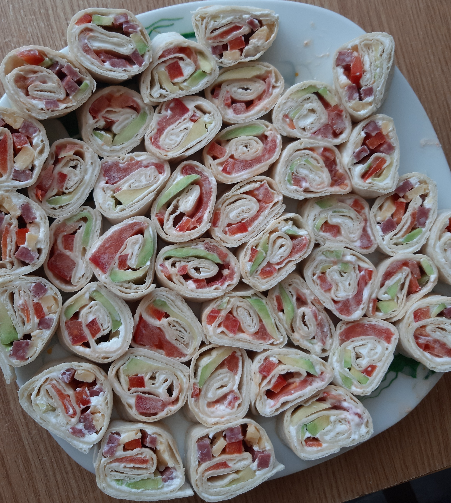

Ingrediente:
-alaut prefăcut și preparat/lipie
-cremă de brânză(Philadelphia)
-ardei
-roșie
-avocado
-cașcaval
-salam
1. Desfacem lipia și o ungem cu cremă de brânză.
2. Tăiem ardeiul, roșia, avocado, salamul și cașcavalul în fâșii lungi.
3. Aranjăm pe lipie legumele, astfel încât să fie câte un rând de fiecare.
4. Rotim lipia ca să obținem o ruladă și tăiem bucățele de dimensiunea sushi.
Poftă bună, dragii mei! 🤗